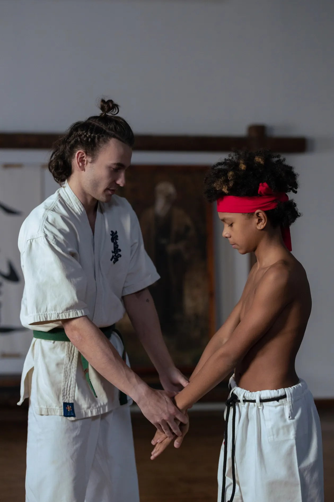
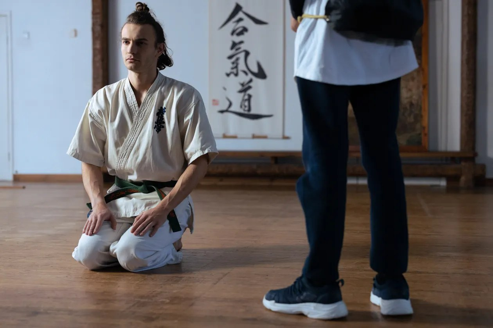
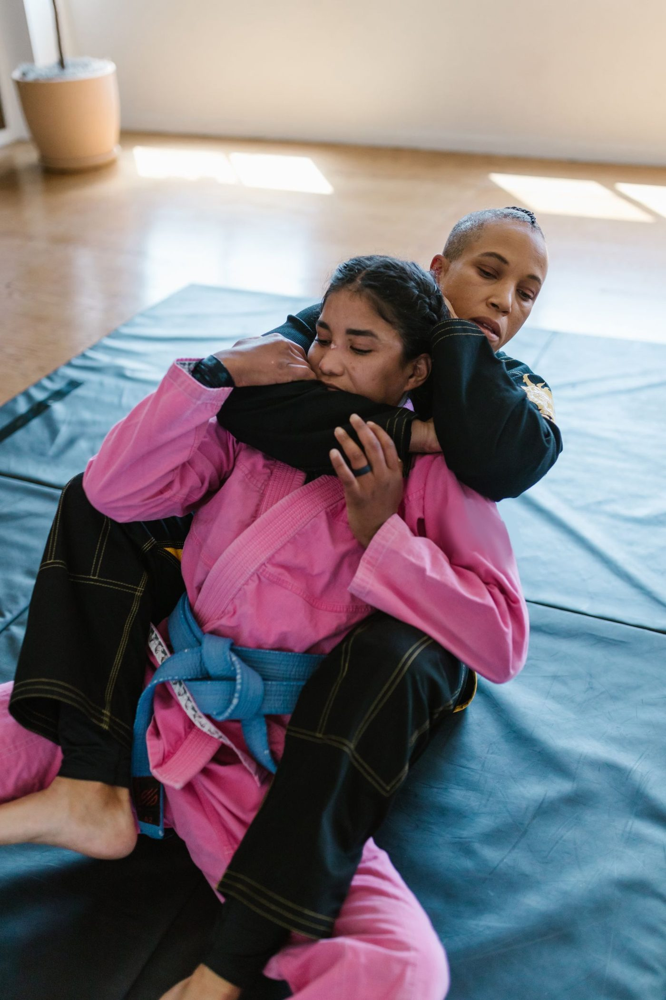

A martial arts school in Topeka, also known as SommaDojo. Training covers Brazilian Jiu-Jitsu for adults and children, beginner friendly with no experience needed, alongside meditative training. A free trial class is offered.



1402 S Kansas Ave, Topeka, KS 66612
Hours vary by day; see the Visit page for the full schedule.